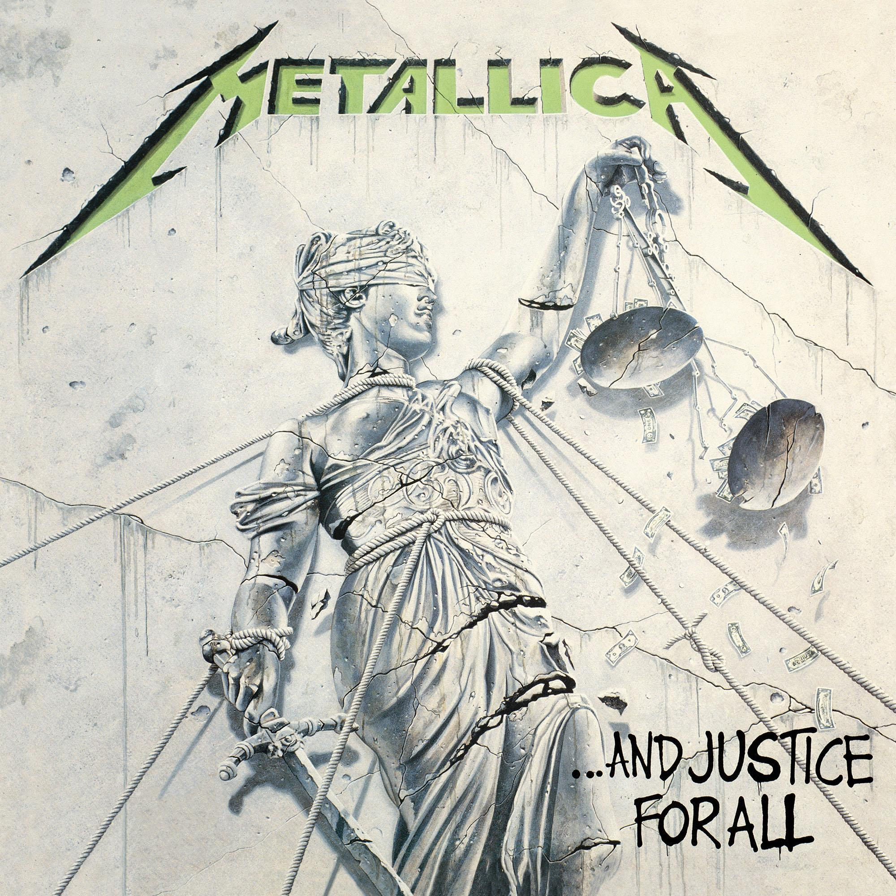
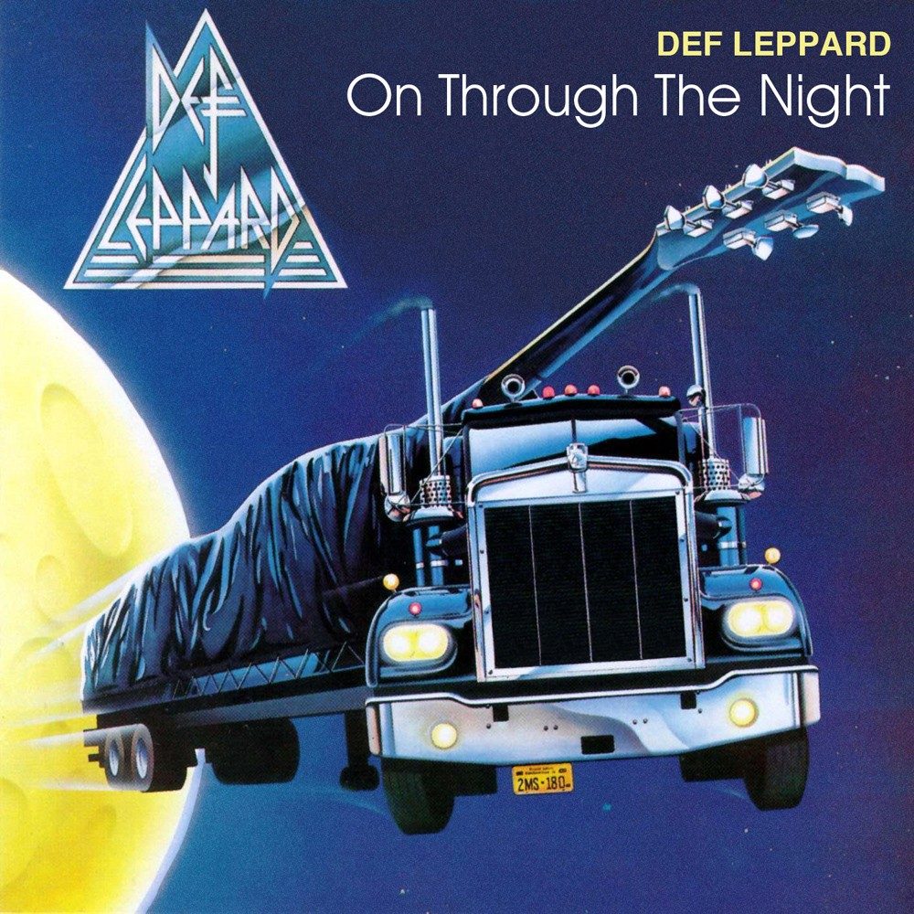
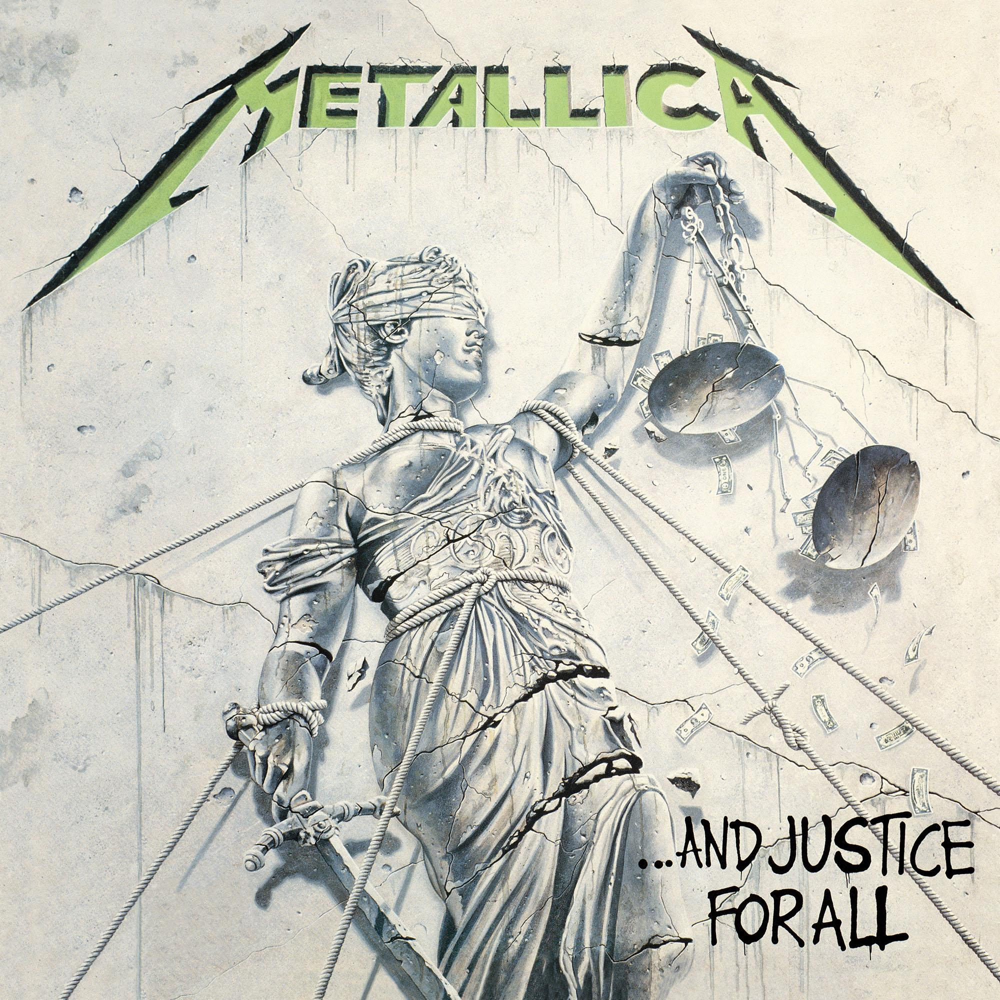
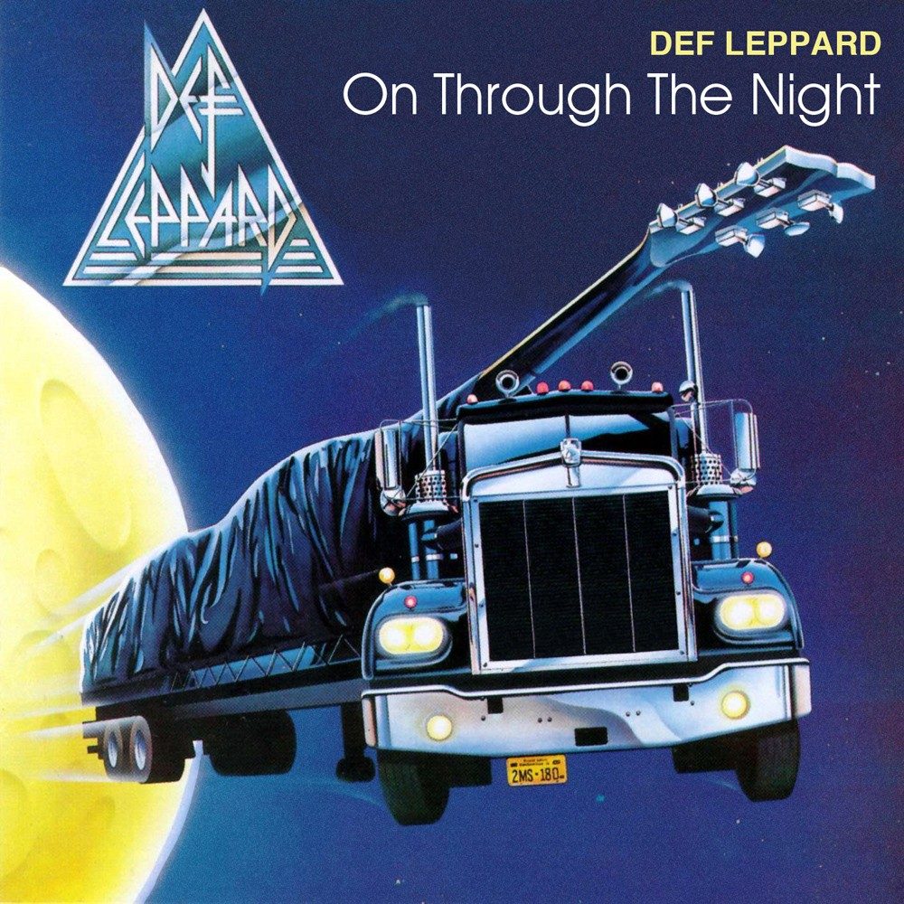

Check out our home page where today only you can purchase all five of the featured albums for the price of four!
 



Welcome to 80s Top Metal Bands, where we bring some of the most exciting bands back from the dead. We have albums from Metallica, Iron Maiden, Def Leppard, Twisted Sister, to Motley Crue. Here you can buy the latest and greatest finds of the 80s. So when you stop by, put in some headphones and relax while listening to the good old days. If you are interested in buying the album, don't wait. In this store you will feel the 80s coming back to life right before your ears. The site is 80s rock, so the theme is all metal all the time. Thanks for stopping by.